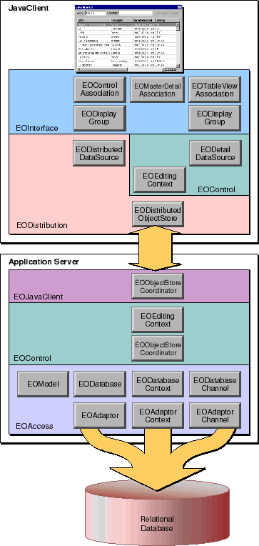

PATH
WebObjects 4.0 Documentation >
EOF Developer's Guide
 Table of Contents
Table of Contents  Previous Section
Previous Section
Classes in a Web Application with a Java Client
The main difference between a Java web application and the other types of applications is that a Java web application is distributed across an application server and Java clients. However, within this distributed structure, a Java web application combines architectural features from other application types into one. Figure 18 shows the classes in a web application. Notice that the access and control layers in the server side of the application are the same as they are in a command-line application. Similarly, the control and interface layers in the client side of the application are the same as they are in an Application Kit application.

Figure 18. Classes in a Web Application with a Java Client
To support distributing the application across the server and clients, the distribution layer is inserted. There's a server side and a client side to the distribution layer. The server side, provided by the EOJavaClient framework, is written in Objective-C. The client side, provided by the com.apple.client.eodistribution package, is written in Java. Together, the two sides of the distribution layer handle the communication between the application server and the user's Java client.
The Distribution Layer
The distribution layer provides channels through which the application server and Java clients communicate. The default channel is an HTTP channel, but you can write your own channel to use a different communication protocol (CORBA, for example). Use of the channel is completely transparent; the EODistributionContext on the server side and the EODistributedObjectStore on the client side handle all the interaction with the channel. So unless you are writing your own channel, you don't need to learn about EODistribution's channel and related classes.
The EODistributionContext class encodes data to send to the client and decodes data it receives from the client. Additionally, it keeps track of state necessary to keep the client and server in sync.
EODistributedObjectStore is a concrete subclass of the control layer's abstract EOObjectStore class. It merely incorporates knowledge of the distribution layer's channel so it can forward messages it receives from the server to its editing context as well as messages going the other way.
EODistributedDataSource is a concrete subclass of the control layer's abstract EODataSource class. Whereas the access layer's EODatabaseDataSource fetches using an EODatabaseContext, an EODistributedDataSource fetches using an editing context (which in turn, forward the fetch request to the server where the request is ultimately serviced by an EODatabaseContext).
Client-Side APIs
The EOControl and EOInterface classes on the client side of a Java web application are actually not the same classes as the ones on the server side. There are two different versions of each framework.
On the server side, you can write your application in either Objective-C or Java. The Java APIs (com.apple.yellow.eoaccess, com.apple.yellow.eocontrol, and com.apple.yellow.eointerface) are actually wrappers for the corresponding Objective-C frameworks. When you invoke a Java method from one of the com.apple.yellow packages, the message is forwarded across Apple's Java bridge to a corresponding Objective-C object. On the client side, however, the APIs (com.apple.client.eocontrol, com.apple.client.eodistribution, and com.apple.client.eointerface) are implemented in pure Java.
Note: In the client, you don't have the option of writing Objective-C code.
Conceptually, the classes in com.apple.yellow and com.apple.client are the same and generally their APIs are identical. However, there are some differences, the most significant of which are that:
Table of Contents  Next Section
Next Section